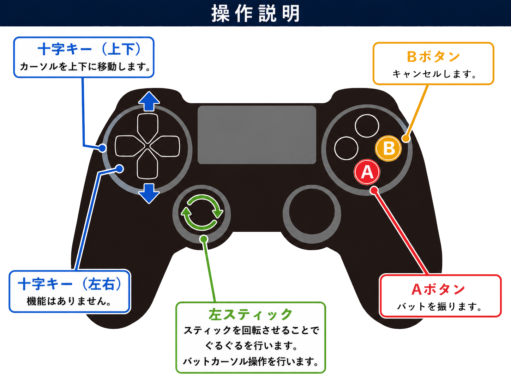
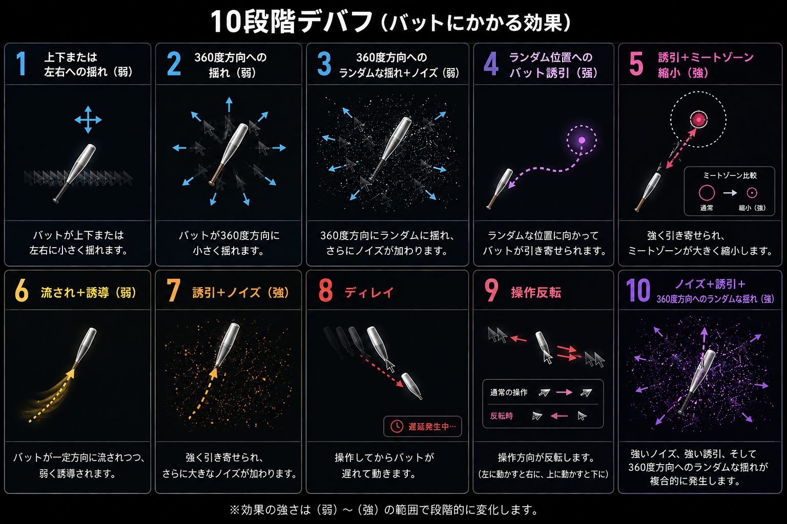
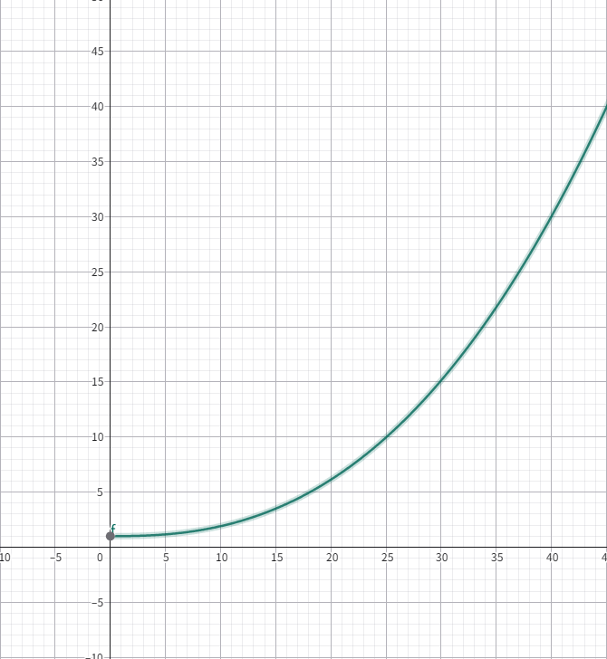
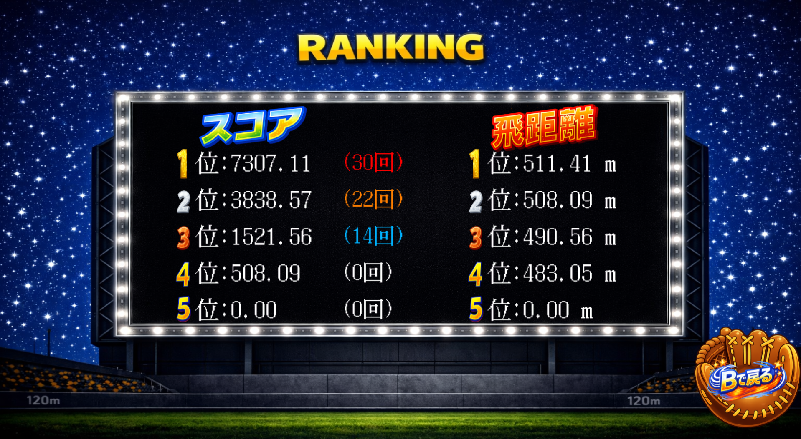

# ふらふら☆スピング！

## 河原電子ビジネス専門学校 ゲームクリエイター科 2年（28卒）
### 氏名：永田晄
### 氏名：岩本陸翔
### 氏名：高木義晴
GitHubのURL
https://github.com/nagatahikaru/Fura-Fura-Sping-
YouTubeのURL
https://www.youtube.com/watch?v=ZaUQRqoTUs0
# 目次
* [ふらふら☆スピング！](#ふらふらスピング)
* [目次](#目次)
* [作品概要](#作品概要)
* [担当ソースコード](#担当ソースコード)
* [担当箇所](#担当箇所)
* [操作説明](#操作説明)
* [ゲーム説明](#ゲーム説明)
* [◇ゲーム詳細](#ゲーム詳細)
* [◇ボールとバットについて](#ボールとバットについて)
* [①ボールの挙動について](#ボールの挙動について)
* [②バットのHit時](#バットのhit時)
* [◇UIについて](#uiについて)
* [①ランキング](#ランキング)
* [②スコア演出](#スコア演出)
* [◇デバフについて](#デバフについて)
* [①デバフのパターンについて](#デバフのパターンについて)
* [②デバフの段階について](#デバフの段階について)
# 作品概要
***タイトル***
ふらふら☆スピング！
***制作人数***
3人
***製作期間***
2026年2月～2026年5月
***ゲームジャンル***
3Dアクションゲーム
***プレイ人数***
1人
***使用言語***
C++
HLSL
***ツールの仕様***
* Visual Studio 2022
* Visual Studio Code
* Adobe Photoshop 2025
* 3ds Max 2025
* effekseerバージョン1.6
* Git Hub
* Fork
***開発環境***
* K2Engine（学校内製エンジン）
* Windows 11 Pro
# 担当ソースコード
### 担当者名：永田晄
担当箇所
Batter.cpp/h
BatterlStateBess.cpp/h
BatterStateMachine.cpp/h
DebufflStateBess.cpp/h
DebuffStageStateMachine.cpp/h
DebuffAimPattern.cpp/h
DebuffDriftPattern.cpp/h
DebuffLagPattern.cpp/h
DebuffMagnetPattern.cpp/h
DebuffNoisePattern.cpp/h
DebuffPatternBase.cpp/h
DebuffReversePattern.cpp/h
DebuffShakePattern.cpp/h
IDebuffPattern.cpp/h
DebuffStage.cpp/h
Catcher.cpp/h
Character.cpp/h
CharacterModel.cpp/h
Background.cpp/h
Actor.cpp/h
ActorStateMachine.cpp/h
Transform.cpp/h
EffectManager.cpp/h
MasterData.cpp/h
Source.cpp/h
### 担当者名：岩本陸翔
担当箇所
Pitcher.cpp/h
Ball.cpp/h
### 担当者名:高木義晴
担当箇所
InGameUl.cpp/h
LoadUl.cpp/h
LradUl.cpp/h
PauseUl.cpp/h
RankingUl.cpp/h
ResultUl.cpp/h
SoundTestUl.cpp/h
TiterUl.cpp/h
SoundManager.cpp/h
Game.cpp/h
Load.cpp/h
Ranking.cpp/h
Result.cpp/h
SoundTest.cpp/h
Start.cpp/h
Titer.cpp/h
GameCamera.cpp/h
[⇧目次に戻る](#目次)
# 担当箇所
### 担当者名：永田晄
担当箇所
[◇デバフについて](#デバフについて)
[①デバフのパターンについて](#デバフのパターンについて)
[②デバフの段階について](#デバフの段階について)
### 担当者名：岩本陸翔
担当箇所
[◇ボールとバットについて](#ボールとバットについて)
[①ボールの挙動について](#ボールの挙動について)
[②バットのHit時](#バットのhit時)
### 担当者名:高木義晴
担当箇所
[◇UIについて](#uiについて)
[①ランキング](#ランキング)
[②スコア演出](#スコア演出)
[⇧目次に戻る](#目次)
# 操作説明

[⇧目次に戻る](#目次)
# ゲーム説明
## ◇ゲーム詳細
### このゲームは、ぐるぐるバットでめまいを起こしたバッターを操作し、ボールを遠くまで飛ばすことを目的としたゲームです。
### めまいによる *デバフ* が操作難易度を上昇させ、*回転数* に応じてスコア倍率が上昇することが特徴です。
### めまいによるデバフは10段階あり、デバフの内容は７種類です。

### 回転数が上昇することでスコアに倍率がかかり、より高スコアを目指せます。
#### y=*スコア倍率*
#### 
X=*回転数*
### ⇧このグラフは回転数に応じて上昇していくスコア倍率を表記したものです
[⇧目次に戻る](#目次)
## ◇ボールとバットについて
### 担当者名：岩本陸翔
### ①ボールの挙動について
* ### 変化球
### 投球時確率で
## 1 ストレートボール

## 2 ナックルボール

## 3 W（ホワイト）ボール

## 4 ヴァニッシュボール

## 5 スライダー

## 6 スローボール

のどれかに変化します。
下記は変化球コードです。
```C++
//ナックルボールとWボール
if (!m_hasHit)
{
switch (m_ballType)
{
case ShakeHorizontal:
m_position.x += sinf(m_position.z * 0.01f) * 3.0f;
break;
case ShakeVertical:
m_position.y += sinf(m_position.z * 0.01f) * 3.0f;
break;
case Straight:
break;
case Curve:
default:
break;
}
}
//スライダー
if (!m_hasHit)
{
m_velocity.x += m_curveDir * 2.0f * dt;
}
//スローボール
m_velocity.y -= 13.5f * dt;
// 1. 元の m_velocity を破壊しないよう、このフレーム専用の速度変数を作る
Vector3 currentFrameVelocity = m_velocity;
// 2. スローボールかつ打撃前で、バッター手前に来たら一時変数の速度だけを半分にする
if (!m_hasHit && m_ballType == SlowBall)
{
if (m_position.z >= 5450.0f && m_position.z < 6500.0f)
{
currentFrameVelocity *= 0.4f;
}
}
// 3. 安全に計算された currentFrameVelocity を使って座標を移動させる
m_position += currentFrameVelocity * dt;
//ヴァニッシュボール
void Ball::Render(RenderContext& rc)
{
if (m_isMagicBall)
{
if (m_throwTimer < 0.9f)
{
return;
}
if (m_position.z >= 5200.0f && m_position.z < 6000.0f)
{
return;
}
}
}
```
* ### **打ちにくさ軽減**
ボールの挙動がランダムに決まるため、通常は理不尽に感じて面白さが低下しますが、プレイヤーに少しでも打てない理不尽感を減らす為、ボールの軌道を読みやすくするようにボールの大きさ、速度を調整しました。
これにより、理不尽さをあまり感じにくいようにしました。
[⇧目次に戻る](#目次)
### ②バットのHit時
ボールがバットに当たった際に、バットの中心からボールが当たった位置を計算し、飛んでいく方向を決めています。
下記はHit判定と計算コードです。
```C++
void Batter::HitBat()
{
if (!IsSwingAnimationPlaying()) return;
Vector3 ballPos = m_ball->GetPosition();
// ① Z制限（打撃ゾーン）
if (ballPos.z < 6060.0f || ballPos.z > 6080.0f) return;
//if (ballPos.z < 500.0f || ballPos.z>5600.0f)return;
// ② カーソル位置（Zはボールに合わせる）
Vector3 cursor = m_meetCursorWorldPos;
cursor.z = ballPos.z;
// ③ 距離判定
float dist = (ballPos - cursor).Length();
if (dist < m_meatRange)
{
Vector3 hitDir = ballPos - cursor;
// 前方向の力
if (fabs(hitDir.z) >= 0.0f) {
hitDir.z = -100.0f;
}
if (m_inGameUI) {
HitEffect();
m_inGameUI->m_shuchusenTimer = 0.5f; // ← 集中線を0.2秒表示
}
if (m_game && !m_game->m_isHitStop) {
m_game->m_hitStopTimer = 0.08f;
}
hitDir.y += 21.0f;
hitDir.Normalize();
// 角度（打ち上げ角）を計算
// 角度（打ち上げ角）を計算
float angleDeg = atan2f(hitDir.y, -hitDir.z) * 180.0f / 3.14159265f;
// ★ 角度に応じてパワー補正（真ん中は補正なし）
float powerScale = 1.0f;
// 高いフライほどパワーを弱くする
if (angleDeg > 60.0f) {
powerScale = 0.35f; // 高フライ → 40%減衰
// ★ Y軸の上昇力を追加（強いフライにする）
hitDir.y += 50.0f; // ← 好きな値に調整（50〜80が自然）
}
else if (angleDeg > 30.0f) {
powerScale = 0.55f; // 中フライ → 20%減衰
}
// ★ 真ん中（10〜30度）→ パワー増加
else if (angleDeg >= 10.0f && angleDeg <= 30.0f) {
powerScale = 1.0f; // ← 好きな倍率に調整
}
// ゴロ（角度が低すぎる）は少し弱くしてもOK
else if (angleDeg < 0.0f) {
powerScale = 0.8f; // ゴロ → 少し弱く
}
// 最終パワー
float finalPower = 935.0f * powerScale;
// ★ 通常ヒット（即飛ぶ）
m_ball->HitBall(hitDir,+finalPower);
// ★ カメラ切り替え
if (m_game) {
m_game->SetCameraMode(Camera_BackBall);
GameCamera* cam = m_game->GetGameCamera();
if (cam) cam->StartHitMomentCamera();
}
// UI・SE・カメラなどは共通でOK
if (m_inGameUI) {
m_inGameUI->m_shuchusenTimer = 0.5f;
}
if (m_game) {
m_game->m_hitStopTimer = 0.02f;
m_game->m_canFastForward = true;
}
if (!m_game->m_isPaused && g_soundManager) {
g_soundManager->PlaySE(Sound::enSound_SE, 100.0f);
auto se2 = g_soundManager->PlaySE(Sound::enSound_SE2, 300.0f);
if (se2) se2->SetVolume(3.0f);
se2->SetName("SE2");
}
}
}
bool Ball::CheckCollision(const Vector3& pos, float radius)
{
float dist = (m_position - pos).Length();
return dist < (m_radius + radius);
}
void Ball::HitBall(const Vector3& hitDirection, float hitPower)
{
Vector3 dir = hitDirection;
dir.Normalize();
m_velocity = dir * hitPower;
m_isMove = true;
// ★ 打った瞬間の位置を記録
m_hitStartPos = m_position;
m_hasHit = true;
Game* game = FindGO("game");
if (game) {
int shot = game->m_shots;
game->m_hitStartZ = m_position.z; // ★ 追加
game->m_hasStartedDistance = true; // ★ 追加
// ★ 打った瞬間のフレームを保存
game->m_hitFrame[shot] = game->GetReplayFrameCount();
game->m_hitVelocities[game->m_shots] = m_velocity; // ← 速度
game->m_hitDirections[game->m_shots] = dir; // ← 方向
game->m_hitStartPos[game->m_shots] = m_position; // ← 位置
game->m_hitPower[game->m_shots] = hitPower; // ← パワー
}
if (game) {
InGameUI* ui = game->GetInGameUI();
if (ui) {
ui->SetStartZ(m_position.z);
ui->ResetBatAndMeetOnly();
}
}
}
float Ball::PredictLandingDistance()
{
Game* game = FindGO("game");
if (!game) return 0.0f;
int shot = game->m_shots;
// ★ 打った瞬間の位置と速度を使う
Vector3 pos = m_hitStartPos;
Vector3 vel = game->m_hitVelocities[shot];
float dt = 1.0f / 60.0f;
while (pos.y > 0.0f) {
vel.y -= 13.5f * dt; // 重力
pos += vel * dt;
}
return m_hitStartPos.z - pos.z;
}
```
⇧このコードにより、ゴロやフライ、ホームランなどのボールの挙動を再現することが可能となりました。
[⇧目次に戻る](#目次)
## ◇UIについて
### 担当者名：高木義晴
### ①ランキング
#### ゲーム終了時にリザルト画面で表示されるスコアを記録し、ランキング形式で表示できるようにしました。

これにより、自身のスコアと他人のスコアを比較でき、対抗心や優越感を生み、話題にもなりやすくしました。
[⇧目次に戻る](#目次)
### ②スコア演出
ゲームが終了しリザルトに向かうと自身の最大飛距離を元にスコアの計算が始まります。
最初は飛距離のみのため、大したスコアではありませんが、

1回目の計算終了後、回転数の倍率ボーナスが現れ

回転した回数分だけスコアにボーナスが加算され、飛距離だけとは比較にならないスコアになります

これにより、スコア上昇時に増えていく数字を見る楽しさを演出しています。
[⇧目次に戻る](#目次)
## デバフについて
### 担当者名：永田晄
### ①デバフのパターンについて
#### 本ゲームでは、デバフを最も重要な要素としており、単調にならないよう複数のデバフパターンを作成しました。
### 1:*振動系*
バットカーソルが上下左右、または360度どの方向にも揺れる振動が発生しカーソルの操作を妨害します。
### 2:*ノイズ撹乱系*
バットカーソルに微細な揺れを発生させますが、単体だと脅威にはなりえません。
ですが、複数のデバフと重なると厄介さを出してくれます。
### 3:*誘導系*
バットカーソルを特定の位置に吸引し操作を妨害します。
プレイヤーは吸引にあらがうか、活用してボール位置に合わせるため、操作に難解さが生まれます。
### 4:*ドリフト系*
誘導系と系統は似ていますが、誘導系は特定位置なのに対して、ドリフトは入力に干渉し、流されるように方向で操作をずらします。
### 5:*入力遅延系*
読んで字のごとく、バットカーソルの操作が少し遅れて追従するような操作になります。
これは単体でも十分に強力なデバフなため、他と組み合わせることはしません。
### 6:*操作反転系*
バットカーソルの操作が反転し、認識に影響を与えます。
野球のような瞬間的な判断を強いられるゲームでは、他と組み合わせると理不尽具合が跳ね上がるため、組み合わせは行いません。
### 7:*照準妨害系*
ヒットゾーンの縮小を行うことで、本来よりも打ちづらくすることで、より正確なカーソル操作を要求されます。
[⇧目次に戻る](#目次)
### ②デバフの段階について
デバフの段階は10段階存在し、3回転ごとにデバフの段階が上がり、操作がより難しくなります。
また、現在の回転数に応じて効果範囲や力が強くなり、
同じデバフでも難しさに差を出しています。
### 零段階目 0～2回転
何のデバフもない状態です。

### 一段階目 3～5回転
上下又は左右の揺れが弱い力と小さな範囲で起こります。

### 二段階目 6～8回転
360度あらゆる方向に揺れが発生し、一段階目よりも大きな範囲と力でカーソル操作を妨害します。

### 三段階目 9～11回転
360度の揺れに加えてノイズデバフが追加され、操作に難しさが生まれます。

### 四段階目 12～14回転
ここで誘導のデバフが入り、360度の狭い範囲の中で特定位置に吸引するカーソル妨害が行われます。
この段階では誘導系デバフのみが適用されます。

### 五段階目 15～17回転
誘導に加えて照準妨害デバフが入り、プレイヤーは吸引に負けないようにカーソルを操作しつつ、より正確に位置を合わせる必要が出てきます。

### 六段階目 18～20回転
ドリフト系デバフに加えて誘導デバフが加わり、流される操作と吸引が起こるため、それらに対抗したゆっくりとしたカーソル操作で位置を目指す必要があります。

### 七段階目 21～23回転
強さが上がった誘導に加えてノイズが走るため、プレイヤーはカーソルを操作しづらくなり、難易度が一段上昇します。

### 八段階目 24～26回転
ここでようやく遅延デバフが登場します。
他のデバフはありませんが、プレイヤーはカーソルが遅延することを想定して、より早くカーソルを操作することを求められます。

### 九段階目 27～29回転
操作が反転するため認識が破壊され、慣れない間は苦戦を強いられる様ないやらしいデバフです。
初見殺しのようなデバフのため、3球目でどれだけ反転に慣れられるかが高スコアのカギです。

### 十段階目 30～上限なし回転
誘導に加えて360度の揺れ、ノイズの3種類のデバフを重ね掛け。
この段階になるとカーソルがかなり暴れるので、打つことすら至難の業です。
しかし、ここで打つことができれば、すさまじい高得点をたたき出せるので、挑戦してみるのもいいでしょう。

[⇧目次に戻る](#目次)